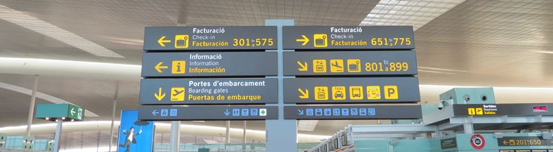

TERMINAL 1 (T1) Y TERMINAL 2 (T2) - AEROPUERTO DE BARCELONA
Como resultado del fuerte crecimiento, el aeropuerto de Barcelona se amplió en 2009 con el fin de proporcionar un mejor servicio a más pasajeros. Se construyó una nueva terminal (Terminal 1) a 4 km de la terminal 2. La nueva Terminal 1 ahora opera el 70% de los vuelos. Las antiguas terminales A, B y C, son ahora la Terminal 2, que opera sólo algunos vuelos.
Terminal 1 (T1)
La Terminal 1 se inauguró en 2009, y ahora opera un 70% de los vuelos. La terminal fue diseñada por el arquitecto catalán Ricardo Bofill y cubre más de 500.000 m2. Las grandes cifras de la terminal 1 son:- 166 mostradores de facturación
- 101 puertas de embarque
- 50 fingers
- 15 cintas de equipaje
- 12.000 plazas de parking
- Más de 20.000 metros cuadrados de zonas comerciales